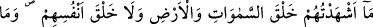
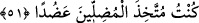

olmayı, Allah’a dost olmaya tercih etmek hakîkaten şaşılacak bir şeydir.
“Oysa onlar” İblis ve onun nesli “sizin düşmanınızdır.” İşin doğrusu, sizin de onlara
dost değil düşman olmanızdır.
“Zâlimler için bu” Allah’ı bırakıp da İblis’i ve soyunu dost edinmek “ne fenâ bir
değişmedir!”
51. Ben onları (İblis ve soyunu) ne göklerin ve yerin yaratılışına, ne de bizzat
kendilerinin yaratılışına şâhid tuttum. Ben yoldan çıkaranları yardımcı edinecek
değilim.
“Ben onları” İblis ve soyunu “ne göklerin ve yerin yaratılışına, ne de bizzat
kendilerinin yaratılışına şâhid tuttum.” Bazısını diğerlerinin yaratılmasına da şâhid
tutmadım.
Bu ifâde Allah Teâlâ’nın yarattıklarından müstağnî oluşuna ve onların ulûhiyette
ortaklığı olmadığına işarettir. Şu halde bu cümle; ‘Göklerin ve yerin yaratılmasında
iblisi ve onun neslini hazır bulundurmadım. Göklerin ve yerin yaratılmasında onlardan
yardım istemedim ve bu ikisinin idâresi konusunda da onlara danışmadım. Çünkü
gökleri ve yeri, henüz onları var etmeden önce yarattım.’ demektir.
Burada cinlerin gaybı bildiklerini iddiâ edenler reddedilmektedir. Onlar göklerin ve
yerin yaratılmasında hazır bulunmadılar ki bu ikisinin gaybına muttalî olabilsinler.
“Ben yoldan çıkaranları” insanları hak dinden döndüren şeytanları, yaratma işinde
veya işlerimden herhangi birinde “yardımcı edinecek değilim” ki ülûhiyette onlarla
ortaklığım vehm edilsin ve bu ortaklığa binâen rubûbiyyetin bazı hükümlerinde bana
iştirak ettikleri düşünülsün.
Bu ifâdenin aslı ‘onları edinecek değilim’ şeklindedir. Burada onları kötülemek ve
yoldan çıkaran kimseler olduklarını tescil etmek için zamir yerine açık isim
kullanılmıştır.
Bil ki Allah Teâlâ ülûhiyyette tektir ve her şey O’nun mahlûkudur. O melekleri, cinleri
ve insanları yarattı. Onları sûret, şekil ve halleri bakımından farklı yaptı.
Saîd b. Müseyyeb şöyle demiştir: “Meleklerde erkeklik ve dişilik yoktur. Üremezler,
yemezler, içmezler. Cinlerde ise üreme vardır. Onların dişisi, erkeği vardır ve
ölümlüdürler. Şeytanlara gelince, onların da dişisi ve erkeği vardır. Çoğalırlar ancak
ölmezler. Tıpkı İblis’in devamlı olarak kaldığı gibi onlar da devamlı olarak dünyada
kalırlar.”
İmam Süheylî, Kitâbü’t-Ta‘rîf ve’l-i‘lâm’da şöyle der: “İblis’ten doğanlardan
birisine “el-Akbas” adı verilmiştir. Onlardan birisine de Belzun denir. Bu, çarşı